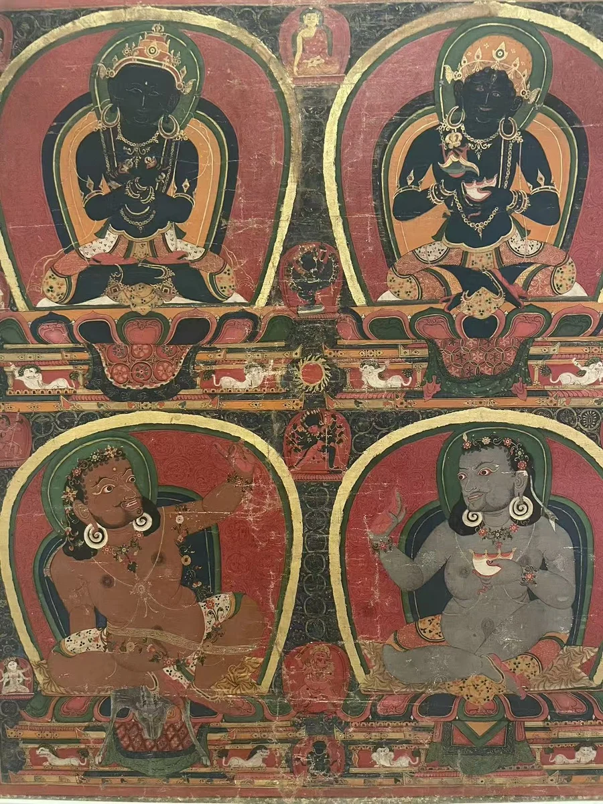
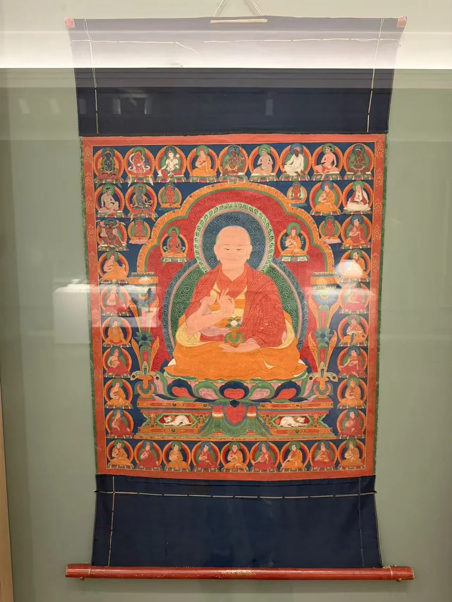

HISTORY & LOOKING
怎样看一幅唐卡
从一张全图，到人物之间的联系
先让目光在整幅画上走一遍。中心与外围、不同大小的人物、重复的圆与方，都是进入图像的入口；馆方记录和题记则帮助把观看变成理解。
先看这幅画怎样组织空间先确定画面有一个中心、多个中心，还是叙事段落，再逐步认人。
 四个曼荼罗：先看一个，再比较四个金贝尔这幅不是一个大主尊的肖像，而是四套曼荼罗在同一画面上的排列。
四个曼荼罗：先看一个，再比较四个金贝尔这幅不是一个大主尊的肖像，而是四套曼荼罗在同一画面上的排列。
圆与方形先帮助找到层次，具体尊名再依本件资料。


由外围向内，再回到全图
先选右上一个圆区，找到外围的环带、内部方形宫殿和中央尊像；再移向其他三处，比较结构如何重复、内部人物如何变化。四角与上下边缘另有人物和供养信息，不能把整幅都当成装饰边框。通用的曼荼罗概念解释空间，四区的具体题材仍以本件馆录为准。 [34]
画中人把结构接到历史
馆方将这幅画与俄尔钦·贡噶桑波的委托及对老师的纪念联系起来。圆形图像因而不仅是抽象秩序，也有传授、追念和供养的背景。更细的尊像辨认与年代问题，留在已有细读中。 [34]
回到亲见作品
金刚鬘四曼荼罗约1429—1456年完整作品与四张现场局部均可放大。
 四分画：读图像之间的传授克利夫兰的四分画用四个大形象，呈现教法来源与传承。
四分画：读图像之间的传授克利夫兰的四分画用四个大形象，呈现教法来源与传承。
这不是四个彼此无关的肖像，也不全是历史人物。


让位置与资料相互校验
馆方辨认左上为金刚持、右上为无我佛母，左下为毗鲁巴、右下为Kanha。无我佛母向毗鲁巴传授的关系属于宗教异象叙述；下方两位则进入师徒传承。四格位置让关系易于看见，人物身份和传授性质仍来自本件研究。 [16]
和雕像互相辨认
将左上的交叉双手与金刚萨埵雕像比较，能看清同样持杵、铃的两种姿势；再把右上的无我佛母与喜金刚身旁的明妃对照，就能看到同一尊神在独立画面和组合中的不同角色。 [16] [51] [24]
回到亲见作品
金刚持、无我佛母与毗瓦巴、甘诃约1450年左上金刚持、右上无我佛母，下方两位成就者。
 传承肖像：一个人和周围的人俄尔堪布桑杰僧格的肖像，把中央上师放入更长的教学关系中。
传承肖像：一个人和周围的人俄尔堪布桑杰僧格的肖像，把中央上师放入更长的教学关系中。
先认主像，再查周围各人的名字；帽色不能代替题记。


正面与背面的阅读不同
中央上师很大，周围小像成行；先看重复的坐姿、宝座与人物间隔，再问他们属于哪条传承。馆方还记录背面塔形文字与迎请尊神安住的内容，说明画面既被观看，也被供奉。本站只有正面照片，背面信息依馆录。 [92]
回到亲见作品
俄尔寺堪布桑杰僧格肖像1580—1590年代鲁宾藏、在西雅图所见的传承肖像。
本尊、佛传与上师传记：阅读方向也会改变中心本尊强调形象与眷属；叙事画则需要寻找反复出现的人物与情节次序。
先问画在做什么，再决定从哪里开始。
上方与下方没有一张通用名单
大威德曼荼罗的上方传承人物、下方委托者由馆方记录支持；其他画可以重新分配这些位置。人物在下方，未必就是供养人。遇到佛传或上师传记画，可先寻找反复出现的主人公与相邻情节，再结合题记确认次序；这与曼荼罗的层层结构是不同的观看方向。 [27] [95]
把问题带回实物
佛传也能雕在象牙佛龛上。克利夫兰降魔构件的主体与周围小人物，为比较“一个核心时刻”和“连续叙事”提供入口。先看全貌、再看关系的办法可以跨媒介使用，但每件作品都需自己的名称与出处。 [12]
回到亲见作品
 俄尔寺大威德金刚曼荼罗约1515—1535年
俄尔寺大威德金刚曼荼罗约1515—1535年本尊与眷属的实例：大威德曼荼罗。
 克什米尔象牙魔军扰佛龛8世纪
克什米尔象牙魔军扰佛龛8世纪象牙佛传构件：用雕刻比较叙事阅读，并非唐卡。
资料与来源
作品基本资料据现场展签及下列馆方记录整理；文字中的观看描述基于这里的现场照片。
- [95] Project Himalayan Art：Thangka ↗
- [16] Vajradhara, Nairatmya, and mahasiddhas Virupa and Kanha ↗
- [34] Four Mandalas of the Vajravali Series ↗
- [27] Mandala of Vajrabhairava ↗
- [51] Buddha Vajrasattva ↗
- [24] Hevajra and Nairatmya ↗
- [92] 鲁宾博物馆：俄尔寺堪布桑杰僧格肖像，F1996.26.1 ↗
- [12] Temptation of Buddha by the Evil Forces of Mara ↗